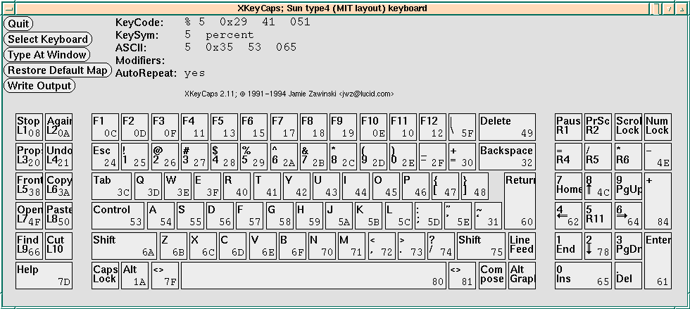
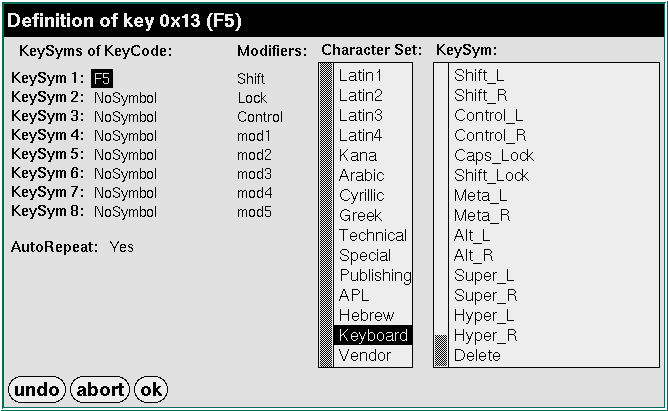
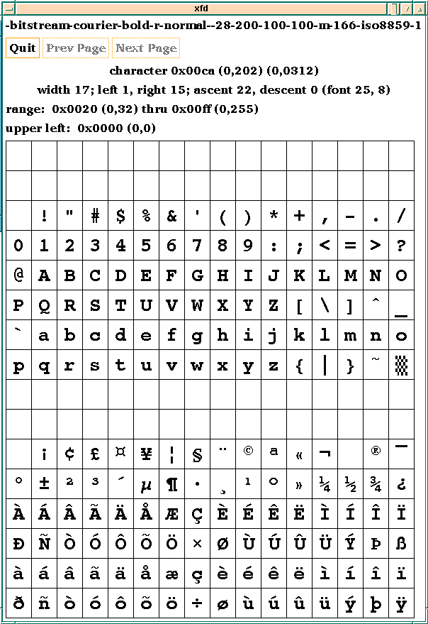
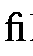
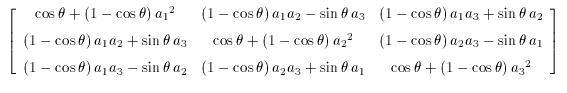

Consider this clip from T2. I show only every 4th frame, else there'd be almost no change at all.
Here is some extra info.
xkeycaps, written by Jamie Zawinski, who also wrote much of xemacs and some of Netscape's browser, lets you display the keycodes and keysyms for the keyboard, and change the keysyms. See the man page. These figures show what it looks like.

Xkeycaps Window

Xkeycaps Popup Window to Change a Key
Since ASCII is 8 bits, the extra 128 chars, with the meta bit set, by typing them with the diamond modifier key on the Sun, can be used for extra chars, such as accented chars. Some fonts do this, such as

ISO-8859-1 Bitstream Courier Font
These codes for the ASCII chars are standardized, as ISO-8859-1. If you use them in email, your recipient will see the same chars, if s/he sees anything, since many fonts don't have these chars at all.
On the Sun, the Alt-graph modifier key calls up a completely different set of chars for the keyboard. By default, it's the same as w/o the Alt-graph key, but you can change this for any key by setting KeySyms 3 and 4 for the non-shifted and shifted chars.
Of course, if you define the KeySym to be a char that's not in your current font, you won't see anything.
The Compose key is another method of typing accented chars on some computers. You would type é, the letter e with an acute accent, by typing Compose, then e, then '. This is not totally compatible with X, and does not work on the Suns.
8859-1, or Latin-1, covers most West European languages such as Albanian, Catalan, Danish, Dutch, English, Faeroese, Finnish, French, German, Galician, Irish, Icelandic, Italian, Norwegian, Portuguese, Spanish, and Swedish, according to http://user.cs.tu-berlin.de/~czyborra/charsets, which also has pointers on using them in email.
There are several other related charsets, all of which have the usual Latin chars, but which supplement them with different sets of 128 extra chars. ISO 8859-2, -3, -4 and -9 have different sets of accented chars. ISO-8859-2, Latin 2, works for most Latin-written Slavic and Central European languages: Czech, German, Hungarian, Polish, Rumanian, Croatian, Slovak, Slovene. ISO-8859-3, Latin 3, is popular with authors of Esperanto, Galician, Maltese, and Turkish. ISO-8859-4, Latin 4, is an incomplete Estonian, Latvian, and Lithuanian.
ISO-8859-5 (which is not Latin 5) has Cyrillic chars, for Bulgarian, Byelorussian, Macedonian, Russian, Serbian and Ukrainian (except for the upstroke ghe). ISO-8859-6 has Arabic, ISO-8859-7 has modern Greek, and ISO-8859-8 has Hebrew. ISO-8859-9, implements Latin 5, which is Turkish. ISO-8859-10, Latin 6, adds Inuit (Greenlandic) and Sami (Lappish) chars to Latin 4.
There are also some non-printing chars, such as soft hyphen and non-breakable space.
Unicode is a standardization effort to include all the European charsets mentioned above, along with all the world's other major fonts. This requires that each char be 16 bits. The organization's homepage is www.unicode.org which says,
The Unicode Worldwide Character Standard is a character coding system designed to support the interchange, processing, and display of the written texts of the diverse languages of the modern world. In addition, it supports classical and historical texts of many written languages.
In its current version (2.0), the Unicode standard contains 38,885 distinct coded characters derived from 25 supported scripts. These characters cover the principal written languages of the Americas, Europe, the Middle East, Africa, India, Asia, and Pacifica....
The Unicode Character Standard primarily encodes scripts rather than languages. That is, where more than one language shares a set of symbols that have a historically related derivation, the union of the set of symbols of each such language is unified into a single collection identified as a single script. These collections of symbols (i.e., scripts) then serve as inventories of symbols which are drawn upon to write particular languages. In many cases, a single single script may serve to write tens or even hundreds of languages (e.g., the Latin script). In other cases only one language employs a particular script (e.g., Hangul).
The primary scripts currently supported by Unicode 2.0 are: Arabic, Armenian, Bengali, Bopomofo, Cyrillic, Devanagari, Georgian, Greek, Gujarati, Gurmkhi, Han, Hangul, Hebrew, Hiragana, Kannada, Katakana, Latin, Lao, Malayalam, Oriya, Phonetic, Tamil, Telugu, Thai and Tibetan.
Unicode doesn't include all current charsets, and also omits dead languages. Therefore, if you want to write the Rosetta Stone in Unicode, you're out of luck. Also, Unicode does not officially include Klingon, on the flimsy pretext that Klingon is fictional. Finally, Unicode actually encodes glyphs, not characters. Loosely, a glyph is the visual representation of a char. The ligature, , used to typeset the chars f and i is one glyph representing the two chars.
Unicode is an active area; in fact, the Fourteenth International Unicode Conference (IUC14), is occurring now, March 22-25, 1999 in Boston; see http://www.unicode.org/unicode/iuc14/
For info on using various languages, e.g., Arabic, Armenian, Burmese, Chinese, Ethiopic, French, Gaelic, Georgian, Greek, Indian (Devanagari, Tamil, Bengali, Bengali, Telugu, and Tamil), Italian, Japanese, Khmer, Korean, Lao, Mongolian, Russian, Tibetan, and Vietnamese, in LaTeX and other places, see ftp://crl.nmsu.edu/CLR/multiling/
This is an offset to the spacing between certain pairs of chars. This makes the letter spacing appear more natural. E.g., A and V should be moved closer together. A good font has more of this than you'd think. Adobe Postscript Times Roman has 113 cases of pairs of chars with special spacing between them. Here are a few, from file
/campus/print/transcript/2.1/common/lib/ps/Times-Roman.afm
KPX A y -92 KPX A w -92 KPX A v -74 KPX A space -55 KPX A quoteright -111 KPX A Y -92 KPX A W -80 KPX A V -129 KPX A T -111
The state of displaying math over the Web is miserable, which is surprising since computer scientists like to do math. You can't even display a Greek char easily, altho subscripts and superscripts are possible. However, the situation starting to change.
The first issue is how to represent the math on the Web page. Here are, IMO, the leading contenders.
This does arrays. The above array was formatted thus (by hand!).
<TABLE border compact>
<TR><TD> a<sub>1</sub><sup>2</sup> </TD>
<TD> a<sub>1</sub>a<sub>2</sub> </TD>
<TD> a<sub>1</sub>a<sub><b>3</b></sub> </TD></TR>
<TR><TD> a<sub>1</sub>a<sub>2</sub> </TD>
<TD> a<sub>2</sub><sup>2</sup> </TD>
<TD> a<sub>2</sub>a<sub>3</sub> </TD></TR>
<TR><TD> a<sub>1</sub>a<sub>3</sub> </TD>
<TD> a<sub>2</sub>a<sub>3</sub> </TD>
<TD> a<sub>3</sub><sup>2</sup> </TD></TR>
</TABLE>
However, this doesn't do more complicated expression nesting.
LaTeX has the world's best math package. The above array looks like this.
\[
\left( \begin{array}{ccc}
a_1^2 & a_1 a_2 & a_1 a_3 \\
a_1 a_2 & a_2^2 & a_2 a_3 \\
a_1 a_3 & a_2 a_3 & a_3^2
\end{array} \right)
\]
It says that x2+4x+4=0 is encoded thus.
<mrow>
<mrow>
<msup> <mi>x</mi> <mn>2</mn> </msup> <mo>+</mo>
<mrow>
<mn>4</mn>
<mo>&invisibletimes;</mo>
<mi>x</mi>
</mrow>
<mo>+</mo>
<mn>4</mn>
</mrow>
<mo>=</mo>
<mn>0</mn>
</mrow>
It is intended that a program be used to generate this.
The next problem is how to display the math.
This package does a pretty good job of translating a complete LaTeX file to HTML. It represents each separate piece of math, even one special char, as an inline GIF. If it knows the Web browser's type font and size, then you can't tell the difference. This package is a valiant effort, but the result is somewhat clumsy, and really complicated LaTeX is not (and cannot be) translated exactly. A more fundamental objection is that you don't want an exact translation, since a paper should look different from a web page. See.
This is a new IBM product that attempts to display much of LaTeX as part of an HTML page, together with the rest of the page. It's a plugin available for Netscape and IE, on Windows and Linux. It can't do really complicated LaTeX; however, the idea is that you are designing an HTML page, not a LaTeX document, and don't use the LaTeX features that Techexplorer doesn't do.
Techexplorer's main problem is that the plugin costs $29, altho a brain-damaged version that won't print is free. A work-around for the content provider is to pre-convert all his pages to PS, and allow people who want hard-copies to download and print that. This is similar to what I've done with some of my handouts, altho I do it to make smaller, faster printing, PS files.
This is a W3C (World Wide Web Consortium) test-bed browser, WYSIWYG page creator, and MathML editor. It creates and displays MathML. It is quite a nice browser, and is free with source, but doesn't have all the bells and whistles of the NS and IE, tho it has most of HTML 4.0. Its goal is to demo what's possible and to motivate the others. Of course, you can get it as an RPM. See
To rotate a point p by an angle t about an axis a, where |a|=1,
p' = a · p a + (p- a · p a) cos t + a × p sin t
= p cos t + a · p a (1- cos t) + a × p sin t
To convert this to a matrix form, p'=M p, where M is a function of a and t, use these. The problem they solve is as follows. Suppose we want to rotate an object by 45° about the axis (1,2,3). We want some matrix M, which depends only on 45° and (1,2,3). Then we will rotate the object by multiplying its points by M. In fact, M would be this matrix:
| 0.07142857142 | - 0.6589265829 | 0.7488081981 |
| 0.9446408685 | 0.2857142857 | 0.1613101866 |
| - 0.3202367695 | 0.6958326704 | 0.6428571428 |
Now, instead of 45° and (1,2,3), think of a general angle, t, and axis, a.
We will work up to M in stages. First, is to find a matrix that depends only on a such that multiplying it by point p is the same as calculating a · p a. Here it is.
| a12 | a1a2 | a1a2 |
| a1a2 | a22 | a2a3 |
| a1a3 | a2a3 | a32 |
This matrix has the following property:
| a · p a = |
|
|
Next, this matrix:
| 0 | - a3 | a2 |
| a3 | 0 | - a1 |
| - a2 | a1 | 0 |
has this useful property:
| a × p = |
|
|
With them, we can find a matrix M to turn equation
into a matrix multiplication, p' = Mp, where
| M = |  |
It is complicated enough that you don't want to try memorizing it or copying it by hand. Even a widely-used text, Foley, got one sign wrong in one edition. My method:
I originally created the matrix with my Maple rotmat routines, and wrote it in LaTeX format.
I copied the formula from last year's handout, which I'd written in LaTeX, into a small LaTeX file.
I tried to use latex2html to convert it, but that failed since it couldn't find any fonts.
So, I ran LaTeX on it, and displayed the result with xdvi.
Finally, I used xv to grab the xdvi window, crop it, and save it as a gif file.
Moral: Math isn't easy on the web.
A rotation preserves distances, and therefore preserves angles. Thus, if ri is the i-th row, and ci is the i-th column, then
(deltaij=1 iff i=j. Else deltaij=0.)
Also,
Here is an explanation of these tests for whether a matrix, M, is a rotation.
|M|=1 since the determinant is how much the volume of a small cube scales.
The length of the first column, when treating that as a vector, is one, since that is the vector (1,0,0) after the transformation. Ditto the other columns.
The columns are perpendicular to each other since the transformed axes must still be perpendicular.
The eigenvalues are 1, cos t ± i sin t .
If t = 180°, then the eigenvalues will be 1, -1, -1.
The axis is the eigenvector corresponding to the eigenvalue of 1.
You can get the angle, apart from some ambiguity, from the other eigenvalues.
There is a complication because if you invert the axis and also negate the angle of rotation, you get the same rotation. This means that you can get two possible axis/angle combos from one matrix. Don't worry about that in this course.
Here is another way to find the axis, if t != 0 or 180°. If M=(mij) is the matrix and a is the normalized axis, then 2 a sin t = (m32-m23,m13-m31,m21-m12). Therefore, (m32-m23,m13-m31,m21-m12) is an unnormalized axis, and its length is 2 sin t .
Here is another way to find the angle, up to an ambiguous sign. The trace of a matrix, which is the sum of the diagonal elements, is independent of the coordinate system used, so long as that is orthonormal. This implies that the trace is the sum of the eigenvalues. Here that is 1+ cos t + i sin t + cos t - sin t , or 1 + 2 cos t . Therefore,
Note that this gives 2 possibilities.
Generally two rotations do not commute; the order matters. Similarly 3-D matrices do not commute. Some rotations do commute:
Here's an example of using Maple to combine two 90° rotations, one about the X-axis, the other about the Y-axis.
> read `/dept/ecse/graphics/h14/rotation.maple`;
[dotprod]
[crossprod]
Warning: new definition for norm
[norm]
[scalarmul]
proc(expr) ... end
rotate :=
proc(a,t,p)
local a2;
a2 := normalize(a);
evalm(cos(t)*p+(1-cos(t))*dotprod(a2,p)*a2+sin(t)*crossprod(a2,p))
end
normalize := proc(a) local l; l := evalf(norm(a,2)); evalm(a/l) end
[ 1 0 0 ]
[ ]
ii := [ 0 1 0 ]
[ ]
[ 0 0 1 ]
rotmat := proc(a,t)
local a2;
a2 := normalize(a);
evalm(cos(t)*ii+extprod(a2,a2)*(1-cos(t))+sin(t)*crossmat(a2))
end
rotmat2 := proc()
local a,a1,a2,a3,c,s;
a[1] := a1;
a[2] := a2;
a[3] := a3;
evalm(c*ii+extprod(a,a)*(1-c)+s*crossmat(a))
end
extprod := proc(a,b)
local m,i,j;
m := array(1 .. 3,1 .. 3);
for i to 3 do for j to 3 do m[i,j] := a[i]*b[j] od od;
op(m)
end
crossmat :=
proc(a)
local m;
m := array(1 .. 3,1 .. 3,[[0,-a[3],a[2]],[a[3],0,-a[1]],[-a[2],a[1],0]]);
op(m)
end
----------------------------------------------------------------
Find the rotation matrix for an axis of (1,0,0) and an angle of Pi/2:
> r1:=evalf(rotmat([1,0,0],Pi/2));
[ 1. 0 0 ]
[ ]
r1 := [ 0 0 -1. ]
[ ]
[ 0 1. 0 ]
----------------------------------------------------------------
> r2:=evalf(rotmat([0,1,0],Pi/2));
[ 0 0 1. ]
[ ]
r2 := [ 0 1. 0 ]
[ ]
[ -1. 0 0 ]
----------------------------------------------------------------
> r12:=multiply(r1,r2);
[ 0 0 1. ]
[ ]
r12 := [ 1. 0 0 ]
[ ]
[ 0 1. 0 ]
----------------------------------------------------------------
> r21:=multiply(r2,r1);
[ 0 1. 0 ]
[ ]
r21 := [ 0 0 -1. ]
[ ]
[ -1. 0 0 ]
----------------------------------------------------------------
> eigenvects(r12);
[ - .4999999997 - .8660254037 I, 1,
{[ - .7382716585 + .3487429165 I, .06711560405 - .8137334705 I,
.6711560548 + .4649905518 I ]} ],
[ - .4999999997 + .8660254037 I, 1,
{[ - .7382716585 - .3487429165 I, .06711560405 + .8137334705 I,
.6711560548 - .4649905518 I ]} ],
[1.000000000, 1, {[ -.5773502687, -.5773502691, -.5773502691 ]}]
This represents a 120 degree rotation about the axis
[ -.5773502687, -.5773502691, -.5773502691 ] .
----------------------------------------------------------------
> eigenvects(r21);
[ - .4999999997 - .8660254037 I, 1,
{[ .7382716585 - .3487429165 I, - .6711560548 - .4649905518 I,
.06711560405 - .8137334705 I ]} ],
[ - .4999999997 + .8660254037 I, 1,
{[ .7382716585 + .3487429165 I, - .6711560548 + .4649905518 I,
.06711560405 + .8137334705 I ]} ],
[1.000000000, 1, {[ .5773502687, .5773502691, -.5773502691 ]}]
This represents a 120 degree rotation about the axis
[ .5773502687, .5773502691, -.5773502691 ], which is different, so the
order does matter.
I wrote a paper summarizing rotation methods, ``Efficient Rotation of an Object'', IEEE Transactions on Computing, Nov. 1983, which I can give to anyone interested. It is enrichment material, and will not be examined.
To talk about rotations in 4D etc, we need a general definition of rotation. Geometers consider a rotation to be a rigid transformation about the origin, but not a reflection. What does this imply?
All the real eigenvalues must be ± 1 since otherwise a line in the direction of the corresponding eigenvector would have its length changed, and not be rigid.
Since the eigenvalues are solutions of a polynomial with real coefficients, any complex ones must occur in conjugate pairs.
Therefore, in 3D, there are 1 or 3 real eigenvalues, all ± 1. If there are 3, then this transformation is an identity or a reflection. If there is one eigenvalue, then its eigenvector represents the axis. This is a proof that there is, in fact, an axis line in 3D.
In 4D, there will be 0, 2, or 4, real eigenvalues. If 0, then the rotation moves every point but the origin. One example would be a rotation in the xy plane followed by one in the zt plane. If there are 2 real eigenvalues, then there is a plane of fixed points. If 4, then this is an identity or a reflection. There never is just a fixed axis line.
From http://www.3dgamedev.com/resources/openglfaq.txt
Subject 5.04: After calling glRotate() a few times I end up rotating around the wrong axis. Why?
http://www.3dgamedev.com/articles/eulers_are_evil.htm
ftp://ftp.netcom.com/pub/he/hexapod/matrixfaq.html
Copyright © 1998-9, Wm. Randolph Franklin. You may use my material for non-profit education and research, provided that you acknowledge me and preserve this notice.